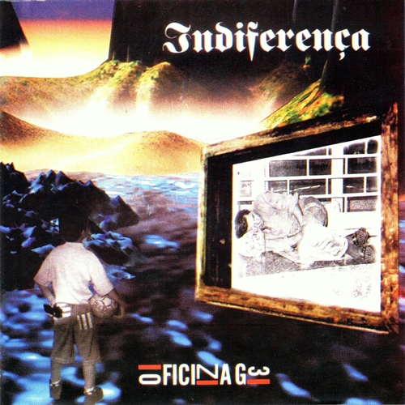

Indiferença
1996 • Hard rock, heavy metal, rock cristão
O Álbum
Indiferença é o segundo álbum de estúdio da banda brasileira de rock Oficina G3, lançado em 1996 pela gravadora Gospel Records, com produção musical de Paulo Anhaia.
Este álbum angariou seguidores para o Oficina G3 ainda que fossem apenas do ainda obscuro cenário do rock cristão. O estilo hard rock do trabalho lembra o hard rock dos anos 80, e ainda pode-se notar influências do glam rock, típico de bandas como Bride e Stryper. O disco tem destaque para a faixa "Glória" que é dividida em duas partes: uma em que é cantada o tradicional hino "Vencendo Vem Jesus", com ritmo de rock e outra com um solo de guitarra de Juninho Afram. O disco marca a estreia de Jean Carllos como tecladista da e a despedida de Luciano Manga, que sairia para formar um ministério pastoral.
Um dos destaques de Indiferença foram as suas seções instrumentais. Duca estreou como compositor com o solo "Duca's Jam", enquanto Juninho Afram fez os solos de "Your Eyes II" e "Glória Inst.". Esta última ganhou notoriedade, ao longo do tempo, como um dos solos mais notórios da carreira de Afram.
Tracklist
- Davi
- Fé
- Magia Alguma
- Glória
- Profecias
- Espelhos Mágicos
- Novos Céus
- Indiferença
- Duca's Jam
- Contra Cultura
- Your Eyes
- Your Eyes II
- Não Temas
- Rei de Salém